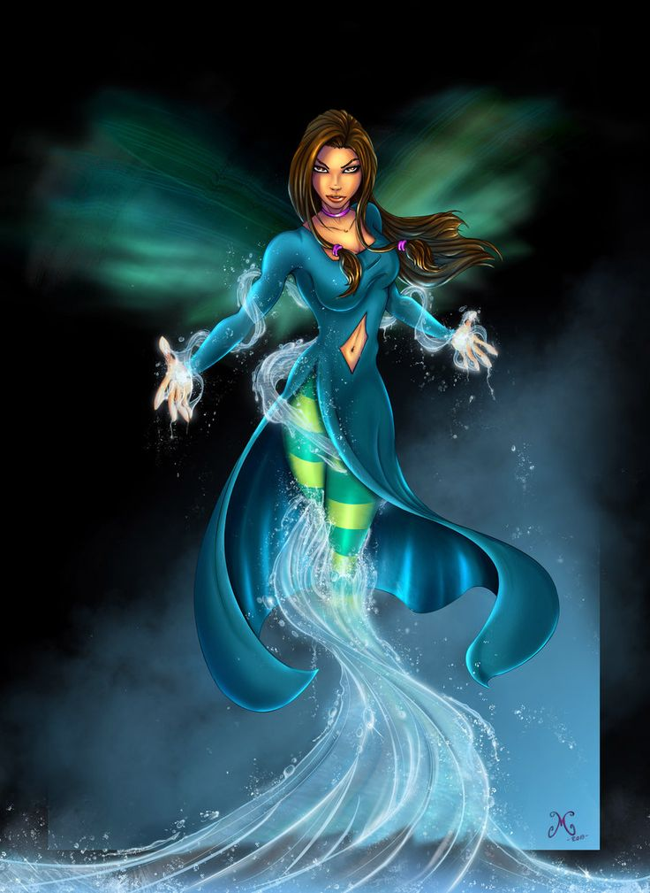

Real Name: Kiwisha Sasa
Role: Superhero
Description: Kiwi Saha is a superhero who uses the power of water and plants to fight evil.
Name:Kate Nathon
Role:Sidekick
Minor Power:Super Strength - Kate has the ability to lift large objects, but it's not as powerful as KIWI SAHA's abilities.
